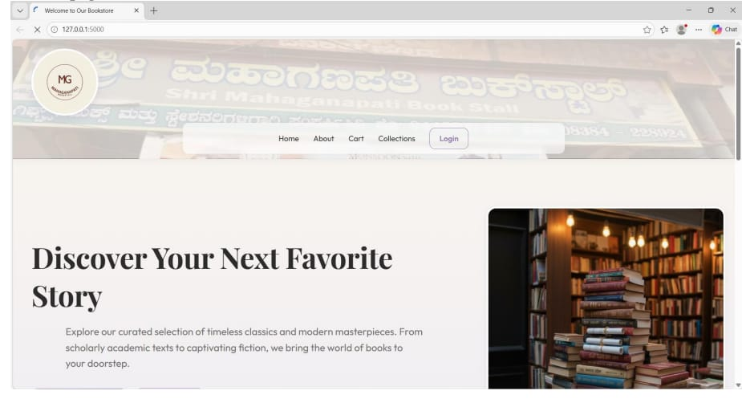

Prateeksha M H
Aspiring Data Analyst | MCA Student | AI Enthusiast
I am passionate about data analytics and problem-solving, turning raw data into meaningful insights to drive innovation.
About Me
I am an MCA student motivated by details and logic. With strong skills in Python, Data Analysis, Java, and AI, I thrive in environments where technology intersects with real-world problems.
Education
MCA
St. Agnes Autonomous College
BCA
PES Institute
PUC
Mahesh PU College
Skills
Programming
- Python
- HTML
- CSS
- Java
Domain
- Data Analysis
- Artificial Intelligence
Tools
- Pandas
- Data Visualization
Soft Skills
- Teamwork
- Adaptability
- Active Learning
Featured Work

Shri Mahaganapati Book Stall
Discover Your Next Favorite Story
Explore our curated selection of timeless classics and modern masterpieces. From scholarly academic texts to captivating fiction, we bring the world of books to your doorstep.
More Projects
Delhi Air Pollution Analysis
Analyzed air quality data from Delhi to identify pollution trends and contributing factors over time.
Outcome: Visualized impact metrics and highlighted critical seasonal patterns.
Festival Spending Analysis
Structured abstract survey data to uncover spending habits and trends during festive seasons.
Outcome: Actionable visual insights for targeting consumer behavior.
Face Swapper
Engineered an AI-driven tool for dynamic face swapping in images using advanced computer vision techniques.
Outcome: Achieved realistic, seamless facial transformations.
Research & Work
Research Paper
Comparative Study of Digital Platforms in Karnataka
Workshop
IoT Hands-on Workshop
Product Launch
Snoozia Smart Pillow & SkyGuard Smart Umbrella